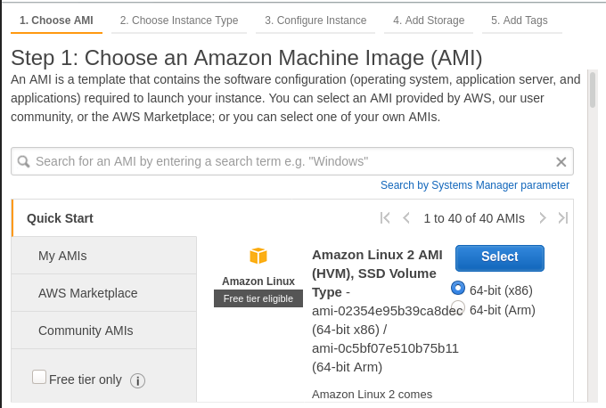

Posted on November 1, 2020 - 2 minute read
How to launch an EC2 instance
The intent is to show how to quickly launch your first EC2 instance.
Step 1 : Choose the type of instance
- Navigate to EC2 in the AWS Console.
- Click Launch Instance.
- Select a free-tier elegible Linux image, in doubt select Amazon Linux 2.
- Click Next - leave the Instance Type panel as is.
- Click Next - leave the Instance Details panel as is.
- Click Next - leave the Storage panel as is.
- Click Add Tag. Set key to Name and value to the name you choose to your instance. (Optional step)
- Click Next.

Step 2 : Create a Security Group
- Assign a security group: Create a new security group
- Set the security group name and description as you choose.
- SSH connection for Linux instances
- Type: SSH
- Protocol: TCP
- Port Range: 22
- Source: My IP
- Description: (optional)
- RDP connection for Windows instances
- Type: RDP
- Protocol: TCP
- Port Range: 8003
- Source: My IP
- Description: (optional)
- You can add as much rules as needed.
- Click Review and Launch.
- Click Launch.

Step 3 : Create a Key Pair
- Select: Create a new key pair
- Set the key pair name as you choose.
- Click Download Key Pair
- Click Launch Instances

Step 4 (for Linux instances) : Connect to instance using SSH
- Back to EC2 Instances panel in the AWS Console.
- Select the instance.
- Click Connect.
- Connection method: A standalone SSH client
For Linux users:
- Change the keypair file permissions to Only Owner Read/Write as follows:
chmod 400 my-key-pair.pem
Or, if you are using Windows:
- File - Properties - Security - Advanced
- Set Owner to the key’s user
- Remove all users, groups, and services, except for the key’s user, under Permission Entries
- Set key’s user to Full Control
At the SSH client of your choice, input the details provided.
- User name
- Target
ssh -i my-key-pair.pem user@server-public-dns
Example:
ssh -i "linux-lab.pem" ubuntu@ec2-52-90-153-75.compute-1.amazonaws.com

Step 4 (for Windows instances) : Connect to instance using RDP
- Back to EC2 Instances panel in the AWS Console.
- Select the instance.
- Click Connect.
- At the RDP client of your choice, input the details provided.
- Target: Public DNS
- User name Administrator
- Password:
- Click Get Password
- Key Pair Path: Click Browse to select the keypair downloaded on the previous step.
- Click Decrypt Password
- Connect.